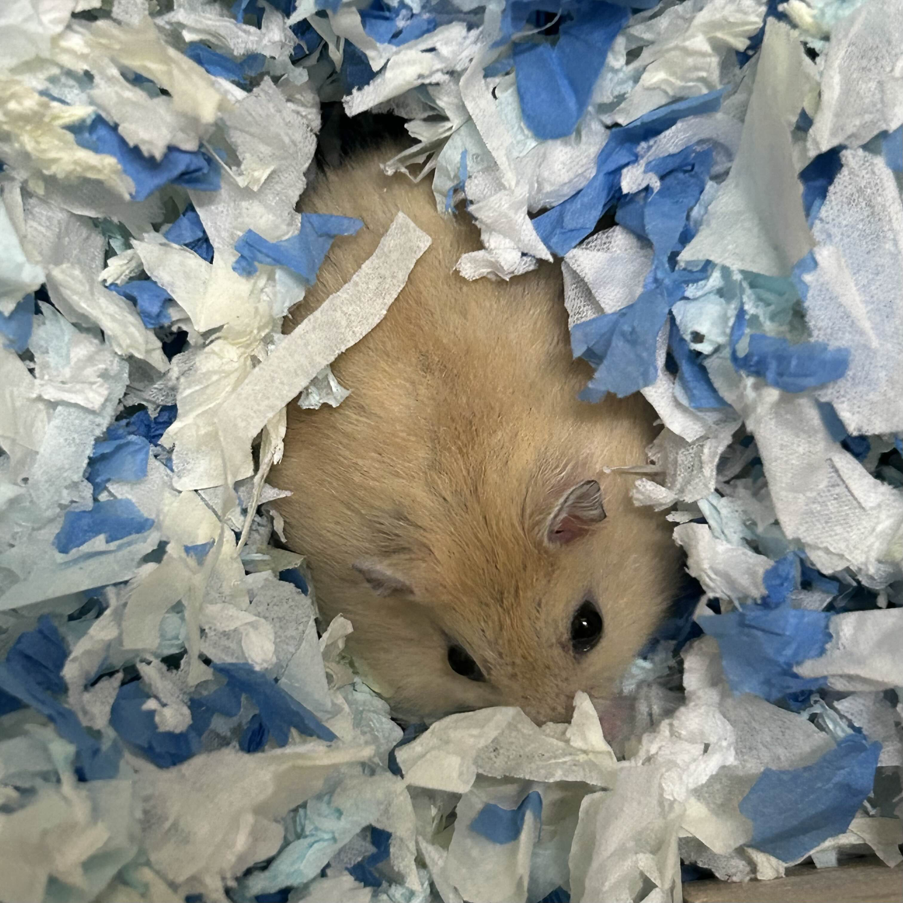

自我介紹
我是王苡安，目前就讀虎尾科技大學五專部。
求學經歷
- 2014 - 2020：臺中市大里區崇光國民小學
- 2020 - 2023：臺中市立光榮國民中學
- 2023 - 現在：虎尾科技大學 資訊工程科（二年級）
興趣
看小說
追劇
追星
歷史
寵物
我有一隻倉鼠名叫薯餅。牠全身毛茸茸的，圓滾滾的小身體像極了一塊金黃色的炸薯餅，名字也是因此而來。薯餅性格活潑， 每天最喜歡在滾輪上奔跑。牠特別愛吃葵花籽和鱈魚香絲，每次我拿出食物，牠總會用閃亮亮的小眼睛盯著我，兩隻小爪子捧著食物啃得津津有味。雖然薯餅不親人但牠還是為我的生活增添了許多樂趣與溫暖。
